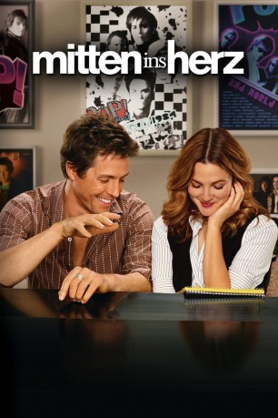

gesehen am 29.04.2016
gesehen am 29.04.2016Alternativ: Music and Lyrics gesehen am 29.04.2016
 
 IMDB-Wertung: 6.5 / 10
IMDB-Wertung: 6.5 / 10  Metascore:
Metascore: 
15 Jahre nach Auflösung seiner Hit-Band "Pop" tingelt der abgetakelte Star Alex über zweit- und drittklassige Bühnen. Da bietet sich ihm durch Zufall die Möglichkeit zum Comeback, ein Duett mit dem Teen-Idol Cora. Dafür muss er nur einen Song schreiben. Musikalisch bereitet dies Alex trotz Zeitdrucks keine Probleme, nur mit den Worten hat er zu kämpfen. Da begegnet ihm Sophie, die hervorragend mit Texten umgehen kann. Und nach und nach entwickelt sich zwischen den beiden viel mehr als nur eine rein berufliche Beziehung.
Jahr: 2007
Dauer: 104 Minuten
FSK: 0
Land: USA Studio: Warner Bros.Tonspuren:
Untertitel:
Auflösung: 1080p (1920x1040) Größe: 8130 MB
Regisseur: Marc Lawrence
Drehbuch: Scott Wiper
Soundtrack:
Darsteller:
 Hugh Grant als Alex Fletcher
Hugh Grant als Alex Fletcher Scott Porter als Colin Thompson
Scott Porter als Colin Thompson Zak Orth als David Newbert - TV Executive #1
Zak Orth als David Newbert - TV Executive #1 Daniel Stewart Sherman als Willy
Daniel Stewart Sherman als Willy Brad Garrett als Chris Riley
Brad Garrett als Chris Riley Aasif Mandvi als Khan
Aasif Mandvi als Khan Drew Barrymore als Sophie Fisher
Drew Barrymore als Sophie Fisher Haley Bennett als Cora Corman
Haley Bennett als Cora Corman Matthew Morrison als Ray
Matthew Morrison als Ray Jason Antoon als Greg Antonsky
Jason Antoon als Greg Antonsky Kristen Johnston als Rhonda
Kristen Johnston als Rhonda Toni Trucks als Tricia
Toni Trucks als Tricia Campbell Scott als Sloan Cates
Campbell Scott als Sloan Cates Bill Chemerka als Concert Vendor , uncredited
Bill Chemerka als Concert Vendor , uncredited Peter Conboy als Reunion Classmate , uncredited
Peter Conboy als Reunion Classmate , uncredited Chris J. Cullen als Concert Goer , uncredited
Chris J. Cullen als Concert Goer , uncredited Robert Sciglimpaglia als Class of 1987 Alumnus , uncredited
Robert Sciglimpaglia als Class of 1987 Alumnus , uncredited Kent Sladyk als Reunion Classmate , uncredited
Kent Sladyk als Reunion Classmate , uncreditedDatei: X:\2007(G-M)\Mitten ins Herz (2007, FSK0, 1920x1040).mkv seit 28.04.2016
Festplatte: HD 2007(A-Z)-2008(A-F)
 Es gibt insgesamt 64 Filme in der Gruppe '2007(G-M)'
Es gibt insgesamt 64 Filme in der Gruppe '2007(G-M)'